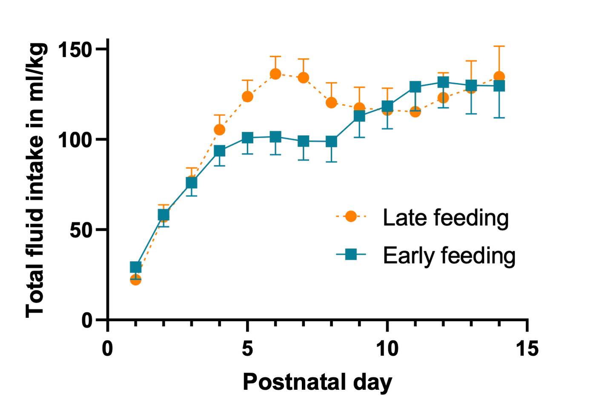

Secondary analysis reveals additional benefits of early feeding
In a brief report of randomized data published in Neonatology, our research group determined that total fluid administration in ml/kg/day was lower during the first week after birth in extremely preterm infants (28 weeks of gestation or less) randomized to receive early progression of enteral feeding (only 1 day of trophic feeding volumes followed by daily advancement of enteral feeding). Our results also suggest potential long-lasting benefits of early progression of enteral feeding:
Outcomes at 2 years: Early group vs. Late group; p value
Cognitive score: 92 +/- 14 vs. 85 +/- 18; p=0.2
Cognitive score < 85: 19% vs. 44%; p=0.13
Weight z score: -0.7 +/- 1.1 vs. -1.2 +/- 1.2; p=0.17
HC z score: -0.4 +/- 1.4 vs. -1.3 +/- 1.6; p=0.11
